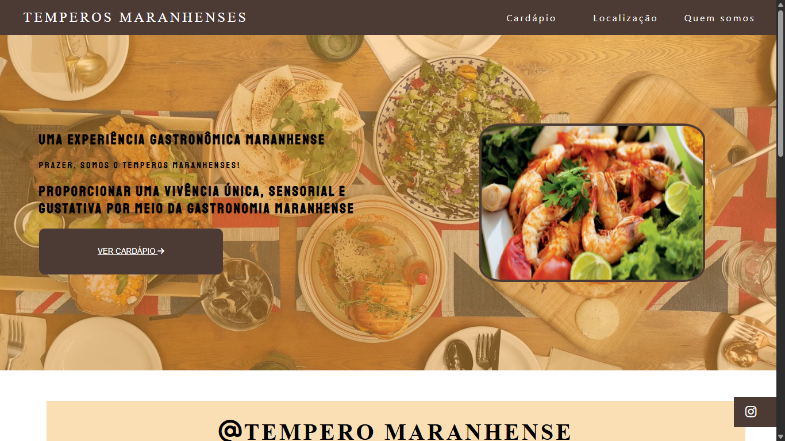
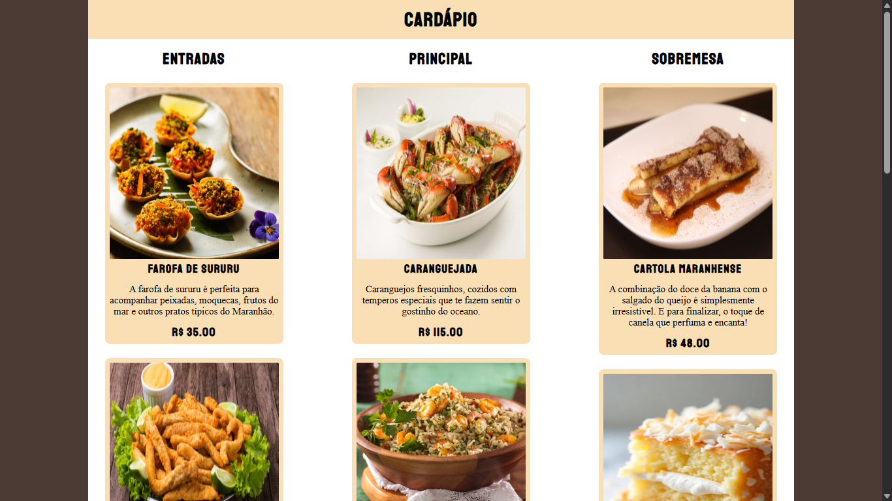
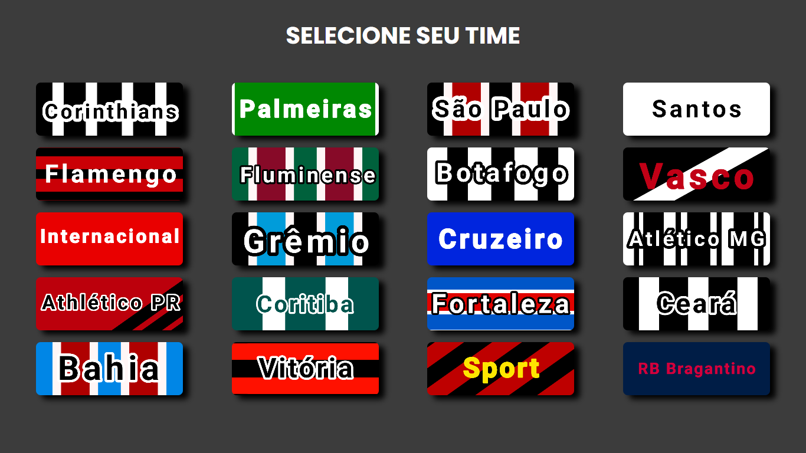
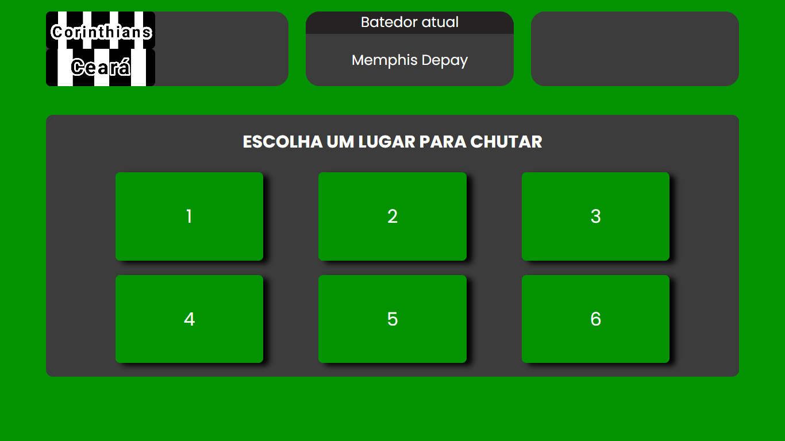
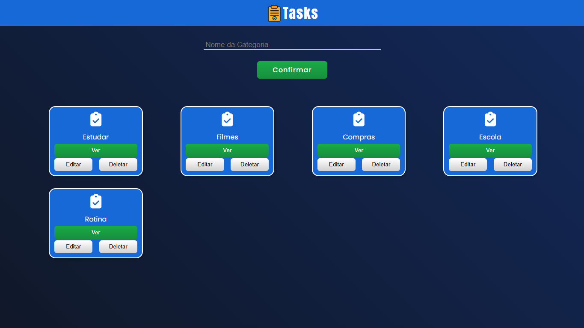
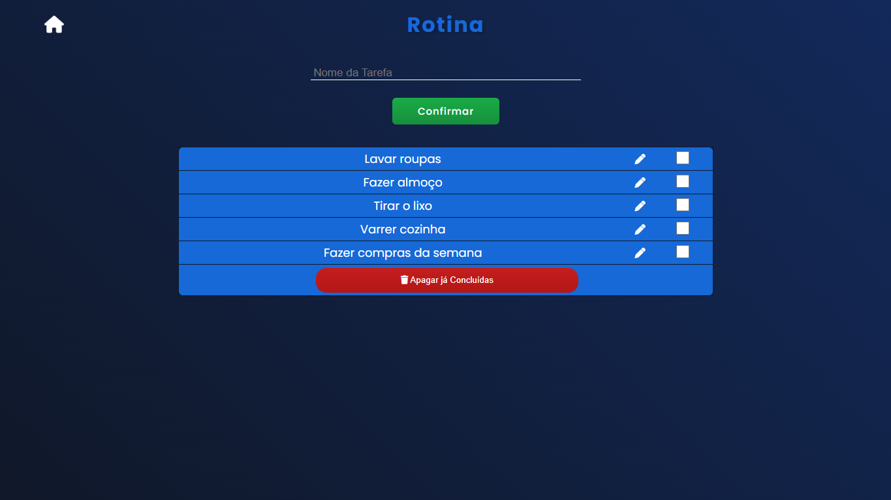
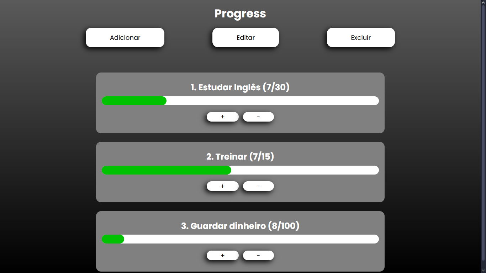
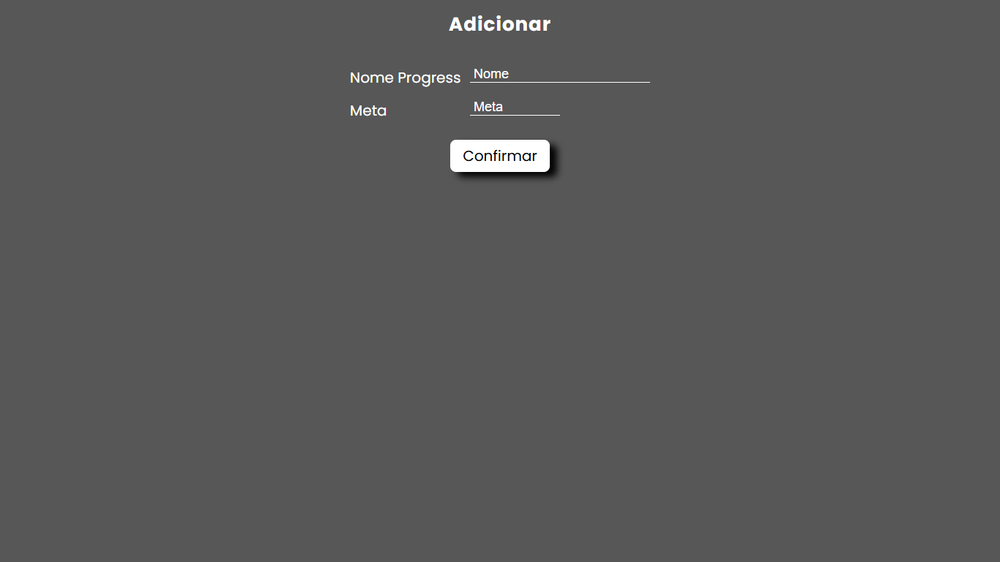
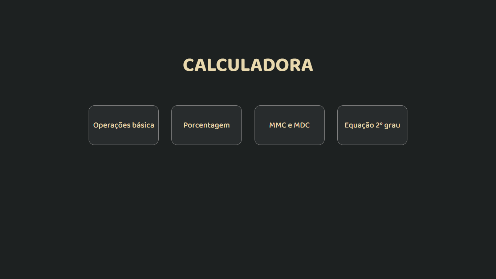
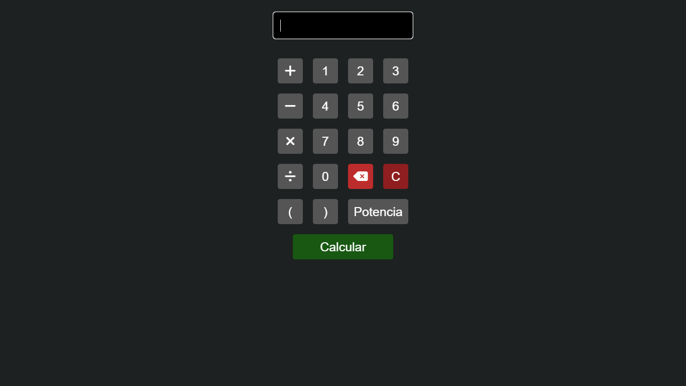

Aplicação web de um restaurante desenvolvida para uma feira de empreendedorismo, em equipe.
Desafio: Criar um sistema com back-end para o gerenciamento de pratos no cardápio.
Solução: Implementação de back-end usando Flask, com registro, edição e remoção de pratos, incluindo o upload de imagens.
Meu papel na equipe: Participação ativa em áreas diversas do desenvolvimento, incluindo front-end e back-end, auxílio na tomada de decisões e adaptação durante o desenvolvimento.
Resultado: Aplicação funcional para o gerenciamento de cardápio, utilizada principalmente como ferramenta de marketing para a feira.


Jogo de disputa de pênaltis com lógica e randomização.
Desafio: Criar um sistema aleatório responsável por representar a CPU e verificar estados.
Solução: Utilização de Math.Random() para decisões da CPU, e controle de estado para gerenciar rodadas, resultados e gols.
Resultado: Jogo funcional e interativo com progressão de fases.


Aplicação web de tarefas com categorias dinâmicas.
Desafio: Criar um sistema capaz de criar, editar e deletar tarefas com agrupamento em categorias
Solução: Estrutura de dados onde cada tarefa é um objeto com a propriedade "categoria" e array das categorias para exibição na interface.
A criação, edição e remoção usam métodos .find() e .filter() para controle de dados.
Resultado: Aplicação funcional e prática para a organização de tarefas.


Aplicação web para gerenciamento de metas.
Desafio: Criar uma estrutura de dados para gerenciamento e persistência de informações e uma barra de progresso com visual atrativo.
Solução: Estrutura de dados utilizando localStorage, armazenamento e recuperação de dados usando JSON.stringify e JSON.parse, e barra de progresso dinâmica utilizando a tag <progress>.
Resultado: Sistema funcional com persistência de dados e gerenciamento de metas para uso pessoal.


Aplicação web com múltiplos tipos de cálculos matemáticos
Desafio: Implementar diferentes operações matemáticas em uma única interface e atualização dinâmica dos resultados sem recarregar a página.
Solução: Utilização de JavaScript para capturar eventos de interação, processar os cálculos conforme a operação selecionada e atualizar o conteúdo da interface de forma dinâmica por meio da manipulação do DOM.
Resultado: Interface interativa que permite ao usuário selecionar diferentes tipos de cálculo, inserir valores e obter resultados de forma imediata.